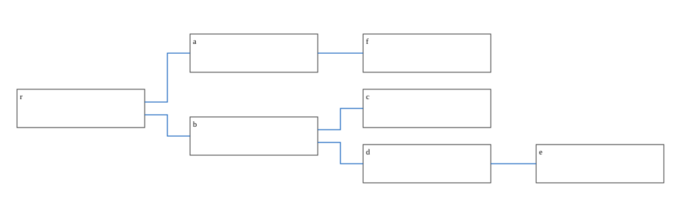
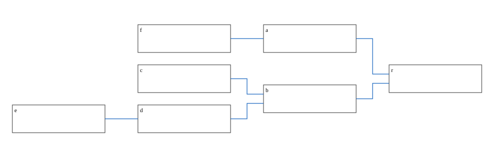
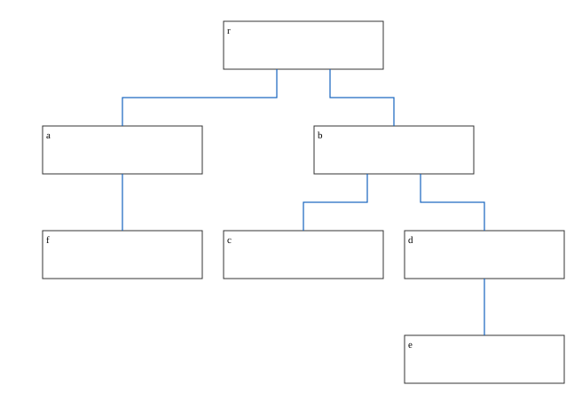
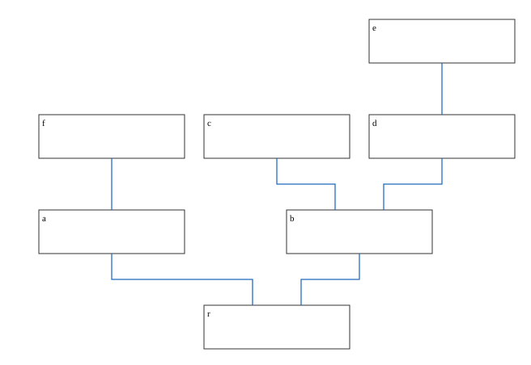
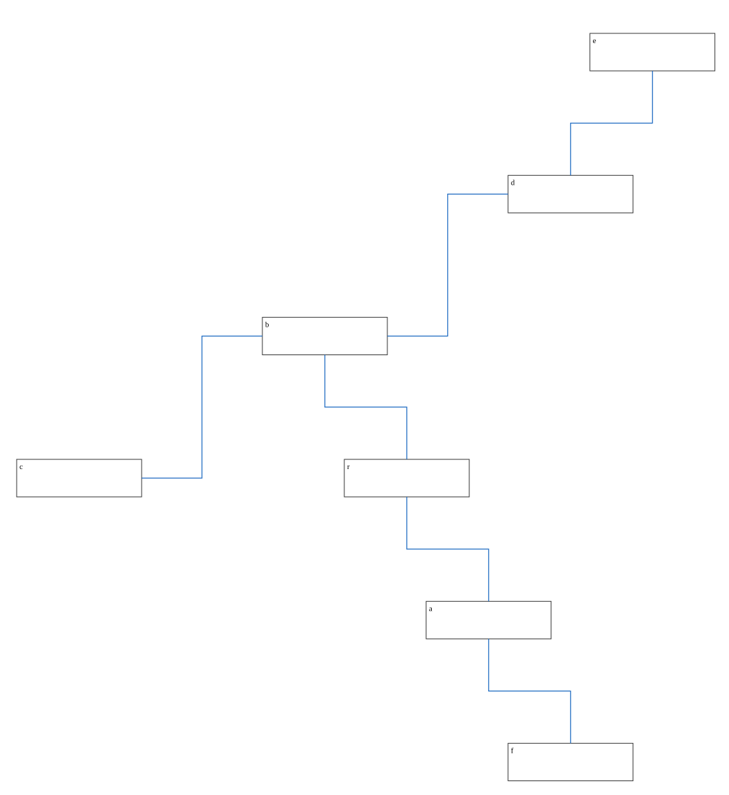
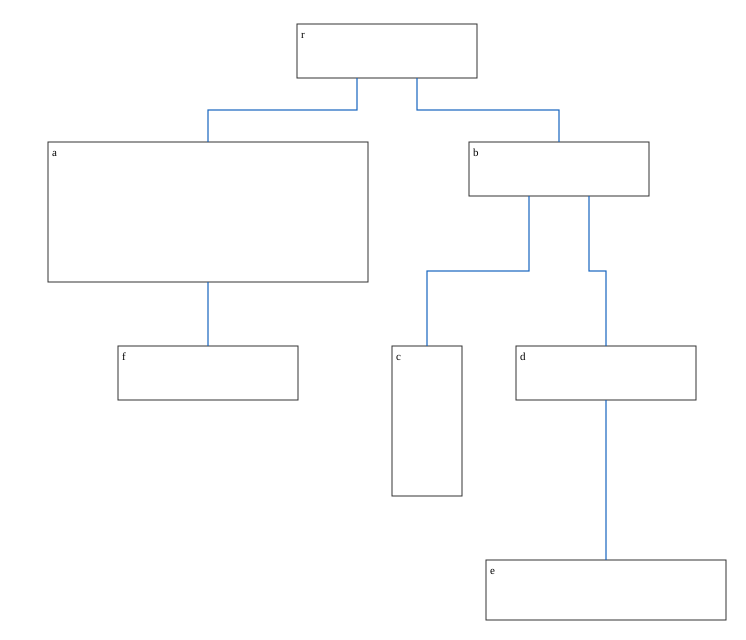
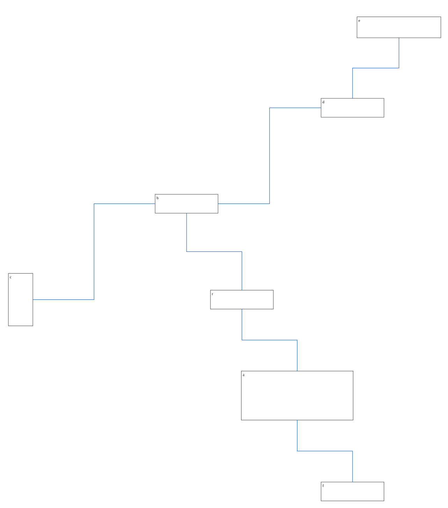
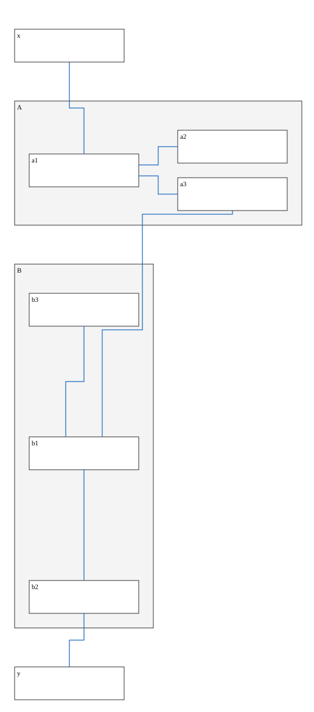

Tree and radial arrangements (visual review)
Each drawing is computed by the default layout (no search) and written as SVG. Check edges, ports and spacing by eye.
asym-tree-lr: 6 routes, 0 geometry issues
asym-tree-rl: 6 routes, 0 geometry issues
asym-tree-tb: 6 routes, 0 geometry issues
asym-tree-bt: 6 routes, 0 geometry issues
asym-radial: 6 routes, 0 geometry issues
asym-tree-tb-unequal: 6 routes, 0 geometry issues
asym-radial-unequal: 6 routes, 0 geometry issues
mixed-tree-radial: 7 routes, 0 geometry issues